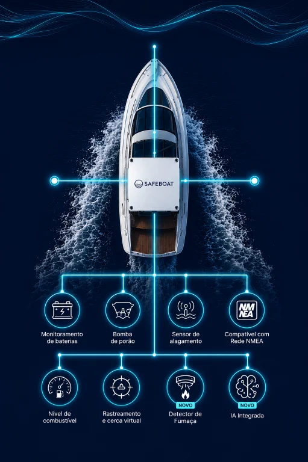
O SAFEBOAT conecta bateria, porão, casa de máquinas e motores de cada embarcação a um painel único para a marina e a um aplicativo para o proprietário. A falha aparece como alerta, enquanto ainda é manutenção.
Pensado para operar em rede — da Marina da Glória a Paraty, com o mesmo padrão em todas as unidades.
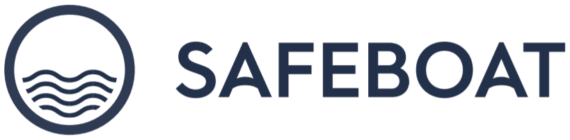
Uma embarcação de marina passa a maior parte do ano atracada. É ali que a bateria descarrega, que a bomba de porão começa a disparar mais do que deveria, que a água aparece onde não devia e que a casa de máquinas esquenta.
Ninguém está a bordo para ver. O proprietário descobre na sexta-feira, com a família no píer e o fim de semana comprometido. E a marina descobre junto com ele — no pior momento, com a pior informação.
E raramente a causa é proporcional ao estrago:
Duas diárias de charter a R$ 15 mil que não são faturadas, enquanto os R$ 20 mil mensais de marina, marinheiro e manutenção correm igual. Valores de referência de mercado para uma embarcação de 50 pés; variam por região, modelo e operação.
Base própria de mais de 100 embarcações monitoradas pela SAFEBOAT, em Santa Catarina e em outros estados, desde outubro de 2024.
A equipe de marinharia passa a agir por alerta, no momento certo, e não por ronda ou por reclamação. Bateria em queda vira uma tarefa de terça-feira, não uma urgência de sábado.
A ligação muda de sentido: em vez de ouvir “meu barco não pegou”, a marina liga dizendo “identificamos e já resolvemos”. É o tipo de serviço que justifica o berço premium.
Cada embarcação com registro contínuo de sensores e manutenções — para o proprietário, para o seguro, para a gestão da própria marina e para a prestação de contas em cotas e condomínios.
A central SAFEBOAT conecta os sensores da embarcação e envia cada leitura para a nuvem — com histórico, alertas e a mesma informação no painel da marina e no aplicativo do proprietário.
A embarcação não tem rede NMEA? Nós criamos uma e convertemos os dados dos motores (J1939) — lendo tudo o que estiver a bordo.
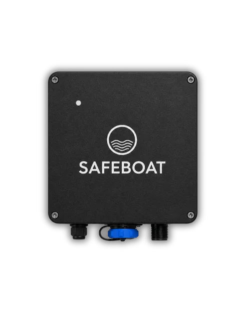
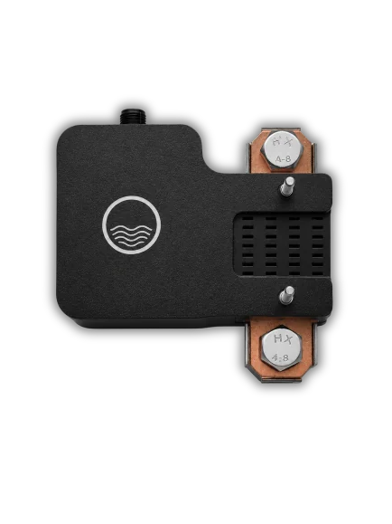
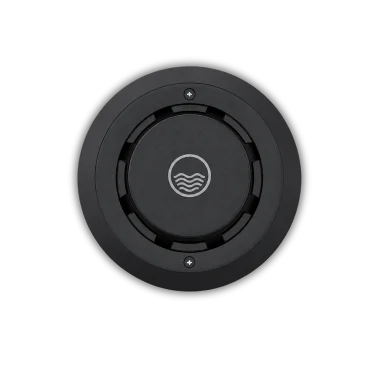
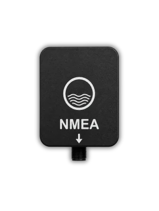
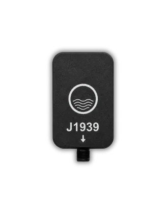
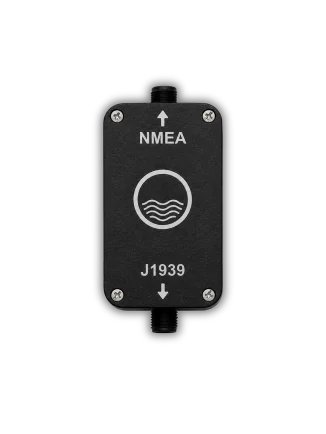
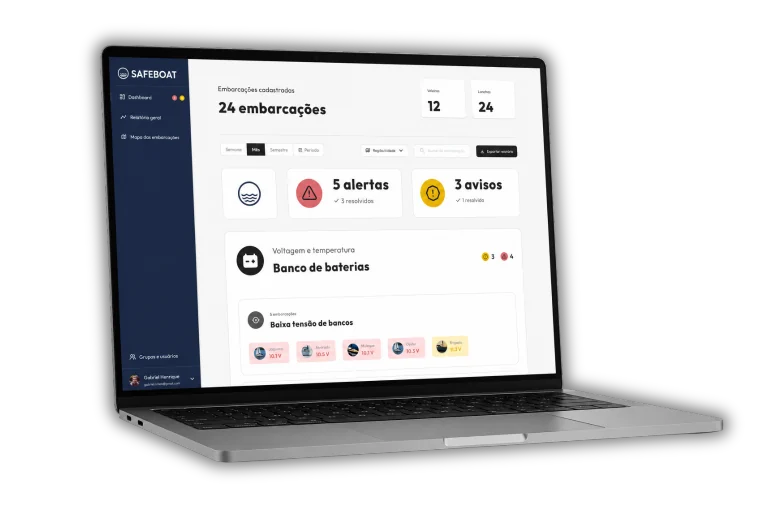
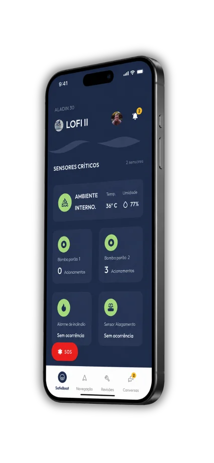
Aberto o app, ele vê em segundos o que importa: sensores críticos, posição, navegação com cartas náuticas oficiais, alarme de âncora e a saúde de cada sistema de bordo — com botão SOS sempre à mão.
E conversa com o barco. “Opa, como está meu barco hoje?” — pergunta no WhatsApp e a SAFEBOAT AI consulta os sensores, o histórico e as manutenções para responder na hora, em linguagem simples.
Disponível na App Store e no Google Play · Suporte em português
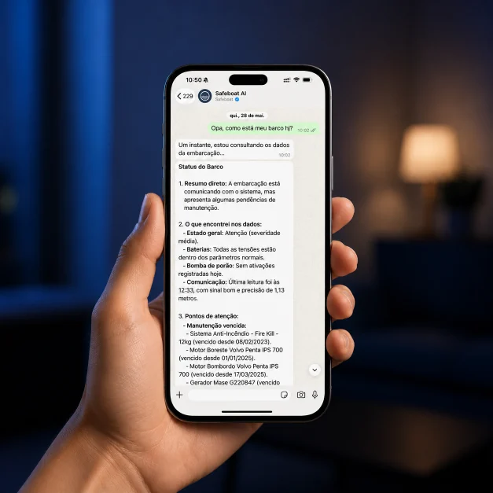
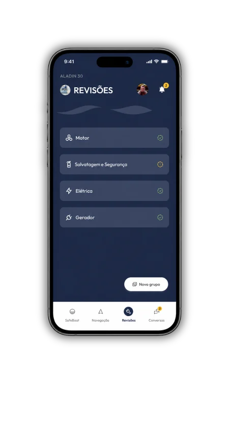
Óleo, filtros, hélice, salvatagem, elétrica, gerador: cada serviço fica no app com data, horímetro e responsável — visível para a marina e para o proprietário.
O horímetro vem direto dos motores, sem ninguém anotar. O app avisa antes de vencer e o painel mostra o que está atrasado em qual barco da marina.
A SAFEBOAT AI cruza o que os sensores medem agora com o que já foi feito a bordo — e responde sabendo quando a bateria foi trocada e o que segue pendente.
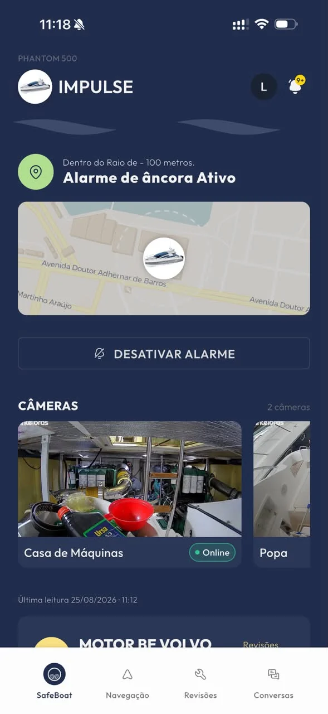
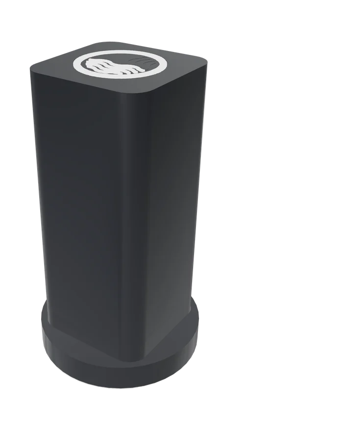
Sensor autônomo do tamanho de uma castanha, fixado na caixa reversora. Aprende a assinatura de vibração do motor, cancela o balanço do mar e avisa semanas antes de desalinhamento, folga de hélice ou mancal virarem retífica.
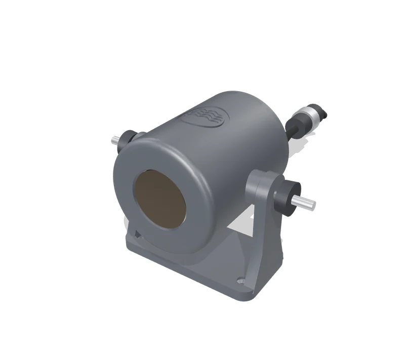
Visão térmica contínua da casa de máquinas com análise por inteligência artificial: pontos quentes e superaquecimentos detectados antes de virarem incêndio.
Próximo lançamento do laboratório SAFEBOAT.
Incluso na mensalidade das vagas premium ou de determinadas categorias. Diferenciação que o concorrente não tem e um motivo concreto para o cliente ficar.
A marina oferece o SAFEBOAT como serviço próprio, com sua marca de atendimento, e fica com a diferença entre o repasse e o preço praticado.
Histórico contínuo por embarcação para subscrição e precificação. A SAFEBOAT está selecionando uma seguradora parceira para um produto náutico embarcado — a rede BR Marinas seria a base ideal.
| Por mês · barcos ativos | 100 | 300 | 500 |
|---|---|---|---|
| Repasse à SAFEBOAT (R$ 189) | R$ 18.900 | R$ 56.700 | R$ 94.500 |
| Receita a R$ 249 (referência) | R$ 24.900 | R$ 74.700 | R$ 124.500 |
| Fica na marina, por ano | R$ 72.000 | R$ 216.000 | R$ 360.000 |
Sem contar o que não aparece na tabela: chamados de emergência que deixam de existir, sinistros evitados e retenção de clientes. Implantação por embarcação não incluída.
Fonte: Marinha do Brasil / Diretoria de Portos e Costas, conjunto “Embarcações” (dados.gov.br), arquivo mais recente, licença ODbL. Estoque acumulado de inscrições; recorte por tipo de casco é classificação da SAFEBOAT.
Levantamento por marina: embarcações, motorização e rede de bordo de cada uma. Define o kit por barco e fecha a proposta com valores de implantação.
Primeiras embarcações instaladas, painel ativo para a equipe da marina e medição do que muda: alertas, chamados, tempo de resposta.
Agenda de instalação por unidade, cerca de 4 horas por barco, sem obra. Onboarding da equipe no painel e dos proprietários no aplicativo.
Suporte técnico, reposição de equipamento, relatórios por marina e por período. Barcos entram e saem do contrato conforme a ocupação.
Não. A central tem conexão celular própria. Só as câmeras exigem internet a bordo (Starlink ou equivalente); sem ela, todo o restante funciona normalmente.
O kit base monitora segurança, baterias, porão e casa de máquinas em qualquer embarcação. Motor eletrônico sem tela recebe o conversor; motor mecânico pode receber o VIB para a saúde do motor.
Cerca de 4 horas por barco, no berço, sem furar o casco e sem obra. A agenda é combinada com cada unidade para não coincidir com saídas.
Da SAFEBOAT, em comodato. A marina não compra hardware; se um componente falhar, a reposição é por nossa conta.
A relação contratual da SAFEBOAT é com a marina, que define preço e atendimento ao cliente final. Suporte direto ao proprietário pode ser contratado à parte.
Não. O SAFEBOAT é ferramenta de monitoramento remoto e apoio à manutenção. Ele reduz o risco e documenta o cuidado — o seguro, as inspeções e a manutenção preventiva continuam obrigatórios.
Começar pela unidade com maior concentração de lanchas de motor eletrônico: é onde a telemetria de motores e o painel mostram resultado mais rápido, e onde a equipe sente a diferença já no primeiro mês.
A SAFEBOAT leva à reunião o cálculo por embarcação, a demonstração do painel de frota com uma frota real e o plano de instalação por unidade.
Vamos escolher juntos a unidade do piloto, levantar a frota e voltar com a proposta fechada por embarcação. O painel da rede pode estar no ar antes da próxima temporada.